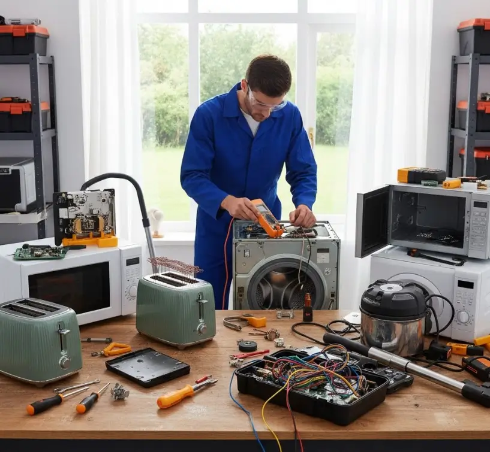

كيف توفر المال في إصلاح الأجهزة: الإصلاح أم الاستبدال؟
طريقة عملية تساعدك على تقييم تكلفة الإصلاح، عمر الجهاز، توفر قطع الغيار وكفاءة التشغيل قبل اتخاذ قرار الشراء أو الصيانة.
عندما يتعطل جهاز منزلي، يكون السؤال الطبيعي: هل أصلحه أم أستبدله؟ الإجابة لا تعتمد على سعر الإصلاح وحده؛ بل على حالة الجهاز، طبيعة العطل، توفر قطع الغيار، كفاءة الجهاز واستخدامه المتوقع خلال السنوات القادمة.
في هذا الدليل من أرشيف التوكيل للصيانة نضع طريقة عملية تساعدك على تقييم القرار قبل دفع تكلفة إصلاح كبيرة أو شراء جهاز جديد بدون حاجة.
محتار تصلّح الجهاز ولا تغيّره؟
ابدأ بتشخيص العطل وتقدير تكلفة الإصلاح قبل اتخاذ القرار. يمكنك التواصل مع التوكيل للصيانة للاستفسار عن الفحص والخدمة المناسبة، سواء بزيارة منزلية أو من خلال مقر الشركة.
احجز أو استفسر عن جهازكمتى يكون إصلاح الأجهزة المنزلية أوفر من شراء جهاز جديد؟
إذا كان العطل محدودًا في جزء يمكن إصلاحه أو استبداله، وكان الجهاز في حالة جيدة بشكل عام، فقد يكون الإصلاح خيارًا اقتصاديًا منطقيًا بدل تحمل تكلفة شراء جهاز جديد.
ويصبح الإصلاح أكثر منطقية عندما لا توجد مشاكل متكررة، ويظل الجهاز مناسبًا لاحتياجاتك، ولا توجد مؤشرات واضحة على ضعف كفاءته أو قرب نهاية عمره التشغيلي.
كيف تقيّم تكلفة الإصلاح قبل اتخاذ القرار؟
- اعرف سبب العطل أولًا: لا تعتمد على التخمين. التشخيص الجيد يوضح الجزء المتأثر وطبيعة المشكلة.
- احسب تكلفة قطع الغيار: اسأل عن القطعة المطلوبة وهل هي أصلية أو متوافقة مع موديل جهازك.
- اسأل عن أجور الخدمة: اعرف تكلفة العمالة والزيارة وأي رسوم إضافية قبل بدء العمل.
- قارن بسعر البديل: لا تقارن بسعر جهاز جديد فقط؛ ضع في الاعتبار النقل والتركيب وأي ملحقات يحتاجها.
- فكر في تكلفة التشغيل: إذا كان الجهاز القديم يستهلك طاقة أعلى بوضوح، فقد يؤثر ذلك على الحساب على المدى الطويل.
متى قد لا يكون الإصلاح هو الخيار الأفضل؟
هناك مؤشرات تجعل شراء جهاز بديل يستحق الدراسة بدل الاستمرار في الإصلاح.
- تكرار الأعطال: إذا أصبحت المشكلة تتكرر خلال فترات قصيرة رغم الإصلاح.
- تكلفة إصلاح مرتفعة: خصوصًا إذا اقتربت من تكلفة جهاز بديل مناسب.
- صعوبة توفير قطع الغيار: بعض الموديلات القديمة قد تكون قطعها نادرة أو غير متاحة بسهولة.
- انخفاض الكفاءة: إذا أصبح الجهاز يستهلك طاقة أكثر أو لا يؤدي وظيفته بالمستوى المعتاد.
- وجود مشكلات متعددة: إصلاح عدة أنظمة في جهاز قديم قد يجعل الاستبدال أكثر منطقية اقتصاديًا.
هل عمر الجهاز وحده يحدد قرار الإصلاح؟
العمر عامل مهم لكنه ليس العامل الوحيد. جهاز قديم بحالة جيدة وعطل بسيط قد يكون إصلاحه أفضل من شراء جهاز جديد، بينما جهاز أحدث قد يحتاج إلى استبدال إذا كانت تكلفة إصلاحه مرتفعة أو توجد به مشكلات متكررة.
لذلك من الأفضل النظر إلى الصورة كاملة: حالة الجهاز، تاريخ الأعطال، تكلفة الإصلاح، توفر القطع، وكفاءة التشغيل.
كيف تقلل مصاريف إصلاح الأجهزة المنزلية؟
- اهتم بالصيانة الوقائية: نظف الفلاتر وافحص الخراطيم والمناطق التي تحتاج إلى تنظيف دوري.
- لا تتجاهل العلامات المبكرة: الصوت غير المعتاد، الاهتزاز، التسريب أو ضعف الأداء قد يكون مؤشرًا على مشكلة تحتاج إلى فحص.
- استخدم الجهاز وفق تعليماته: التحميل الزائد أو التشغيل بطريقة غير مناسبة قد يزيد الضغط على المكونات.
- استخدم قطع غيار موثوقة: القطعة المناسبة للموديل تقلل احتمالات تكرار المشكلة.
- اطلب تشخيصًا واضحًا: معرفة سبب العطل تساعدك على اتخاذ قرار اقتصادي بدل تغيير أجزاء عشوائيًا.
الإصلاح بنفسك أم الاستعانة بفني؟
بعض المهام البسيطة مثل تنظيف فلتر أو فحص خرطوم خارجي قد تكون مناسبة للمستخدم إذا كانت مذكورة في دليل الجهاز. أما الأعمال التي تتطلب فك المكونات الداخلية أو التعامل مع الكهرباء أو دوائر التبريد أو أجزاء التسخين، فمن الأفضل تركها لفني مؤهل.
المشكلة في الإصلاح العشوائي ليست فقط احتمال عدم حل العطل؛ فقد يؤدي التعامل الخاطئ مع مكون حساس إلى تلف أكبر أو إلى خطر على المستخدم والجهاز.
أسئلة يجب أن تطرحها قبل الموافقة على الإصلاح
- ما سبب العطل بالتحديد؟
- ما القطعة التي تحتاج إلى تغييرها؟
- ما تكلفة القطعة وأجور الإصلاح والزيارة؟
- هل توجد ضمانات على الخدمة أو القطعة؟ وما شروطها؟
- كم يستغرق الإصلاح؟
- إذا عاد العطل، ما الإجراء المتبع؟
قبل ما تشتري جهاز جديد… افحص القديم
أحيانًا يكون الحل في إصلاح جزء واحد بدل استبدال الجهاز بالكامل. التوكيل للصيانة يساعدك في فحص الأعطال وصيانة الأجهزة المنزلية، مع توفير قطع غيار أصلية عند الحاجة وفق توافرها وموديل الجهاز، وضمان على الخدمة والقطع وفق سياسة الشركة.
احجز صيانة الآنأسئلة شائعة
هل تكلفة الإصلاح دائمًا أقل من شراء جهاز جديد؟
لا. تختلف الحالة حسب نوع العطل وعمر الجهاز وتكلفة القطع والخدمة وسعر البديل. لذلك من الأفضل إجراء مقارنة قبل اتخاذ القرار.
هل ارتفاع فاتورة الكهرباء يعني أن الجهاز يحتاج إلى الاستبدال؟
ليس بالضرورة. قد يكون السبب عطلًا أو إعدادًا غير مناسب أو مشكلة في جزء معين. لكن إذا كان الجهاز قديمًا وكفاءته منخفضة، فمن المفيد مقارنة تكلفة تشغيله بجهاز أحدث.
متى أطلب فحصًا فنيًا فورًا؟
عند وجود رائحة احتراق، شرر، تسريب مياه قريب من الكهرباء، سخونة غير طبيعية، أو صوت قوي وغير معتاد. في هذه الحالات أوقف استخدام الجهاز بأمان واطلب فحصًا متخصصًا.
هل يمكن إصلاح جميع موديلات الأجهزة؟
إمكانية الإصلاح تعتمد على نوع الجهاز والموديل وطبيعة العطل وتوفر القطعة المناسبة. يتم تحديد ذلك بعد الفحص والتشخيص.
هل استخدام قطع غيار أصلية مهم؟
اختيار قطعة مناسبة وموثوقة للموديل مهم للحفاظ على توافق الجهاز وتقليل احتمالات تكرار المشكلة. وعند توفر القطعة الأصلية تكون خيارًا مناسبًا للإصلاح.
هل تواجه مشكلة أو عطلاً في جهازك؟
تواصل مع فريق "التوكيل للصيانة" الآن للحصول على استشارة فنية وفحص منزلي فوري بأعلى معايير الدقة والأمان.